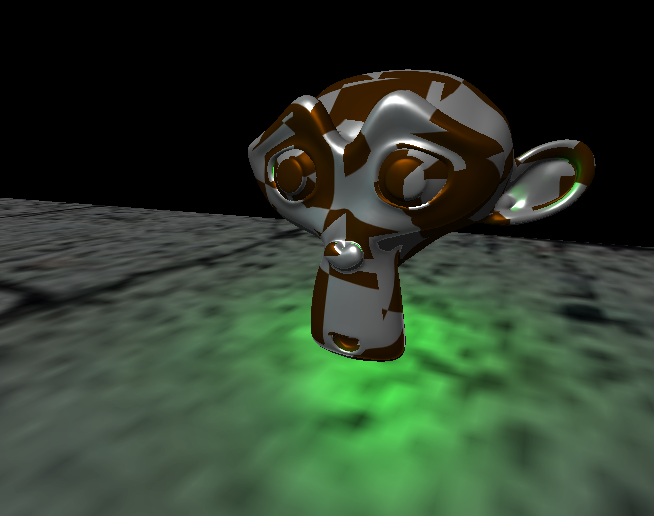
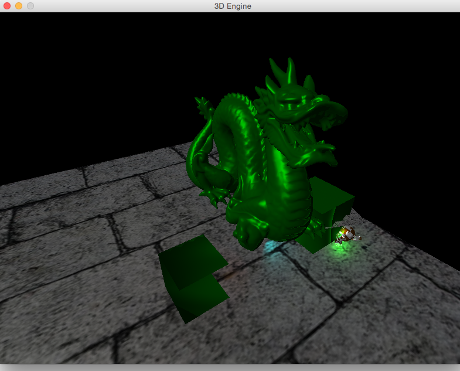
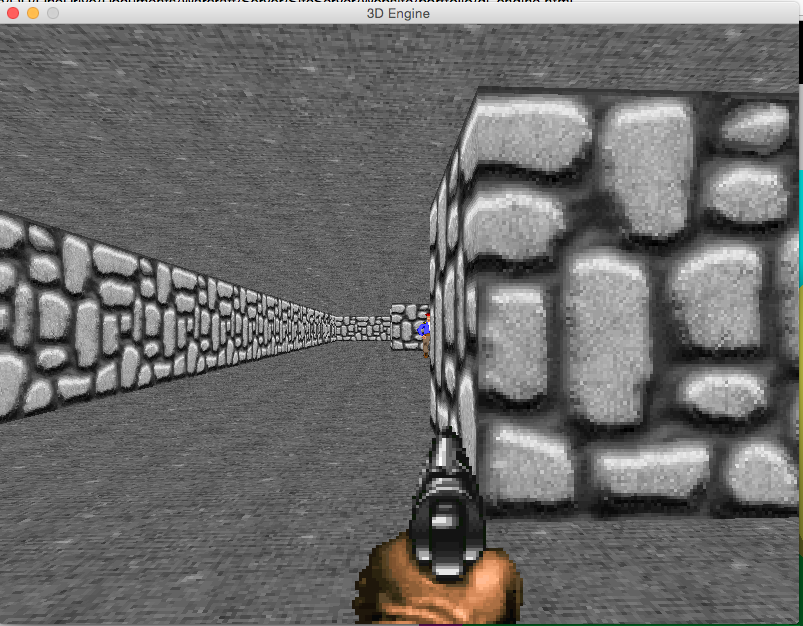
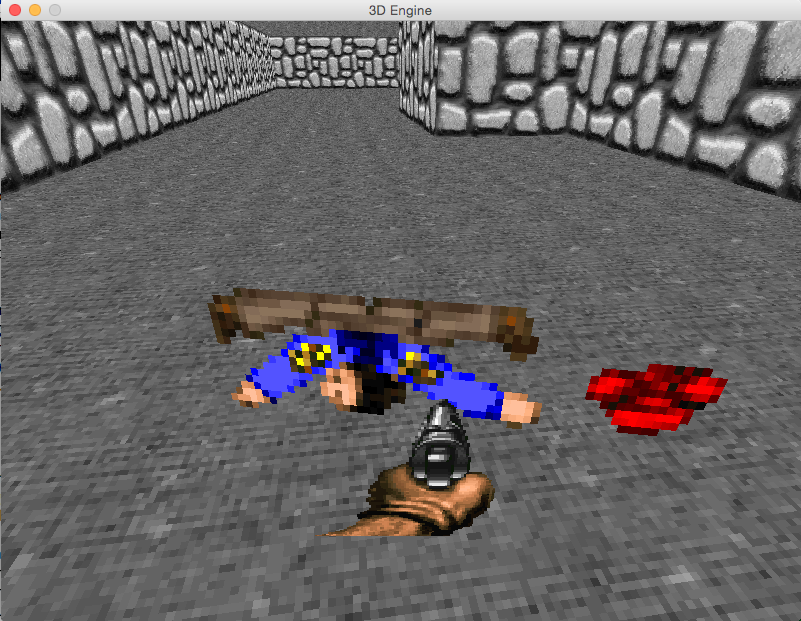

OpenGL 3D Engine

Project Premise
The first main goal of this project was to create a foundation for a 3D game engine. This then turned into more of a sandbox project where instead of creating a fullfledged game, I could explore different aspects and techniques of generating computer graphics.
To demonstrate how this engine could work in real life I created an example first person shooter game that is reminiscent of the old Doom or Wolfenstein3D games. Below you can find images and a video demonstrating the engine. This game, with minor extensions of the original engine (such as simple AI, sprite and Physics support), was very easy to put together given the foundation the engine provided.
Bellow there is a list of features included in the engine.
List of Features:
- OBJ Loading
- Texture support
- Dynamic Shaders
- Shadows
- Phong ? shading
- Anti Aliasing (See bachelors paper)
- Proper generic lighting
- Modular support


